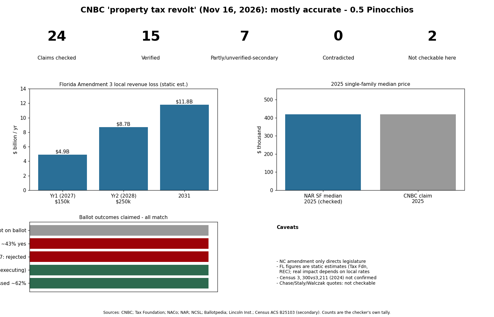

Rating: 0 to 1 Pinocchio (call it 0.5). Of 12 claim groups, none were contradicted; 8 verified against primary or near-primary sources, 2 could not be confirmed (ACS $3,300 median, Tax Foundation bill range) and the interview quotes cannot be checked here.
| Claim | Answer / key values | Confidence |
|---|---|---|
| Median SF home price ~$300k (2020) to ~$419k (2025), NAR | Verified (2025: $419,300 SF; $414,300 all types). 2020 figure not retrieved | medium |
| Florida Amendment 3 approved; expands homestead exemption for non-school levies, lowers cap | Verified: passed ~62% (60% needed); $150k in 2027, $250k in 2028; non-homestead cap 10% to 5% | high |
| North Carolina amendment requires legislature to limit increases | Verified, but not self-executing: directs future legislation | high |
| Oklahoma and Wyoming rejected | Verified (OK SQ 847; WY Initiative 1 ~43% yes). Results unofficial until canvass | high |
| Ohio abolition lacked signatures; retry 2027 | Verified (announced June 5, 2026; 413,488 valid needed; group targets 2027) | high |
| 168 state measures, 40 states + DC, Jan 2020-Jun 2026 (NACo) | Verified on NACo report | high |
| Property tax ~28% of local funding in 2024 (Lincoln) | Verified: 28.4% average | medium |
| Florida cost $4.9B / $8.7B / $11.8B (Tax Foundation) | Verified on Tax Foundation page; same path in FL Revenue Estimating Conference | high |
| Median owner bill ~$3,300 (ACS) | Not confirmed: 2024 ACS 1-yr median found at $3,211 via secondary sites; article says 'last year' | low |
| Bills under $250 to over $10,000 (Tax Foundation 2026) | Not located; NYC median above $10,000 and Birmingham $1,156 in ACS 5-yr (LendingTree) | low |
| Quotes: Chase (NACo), Walczak (Tax Foundation), Staly (Flagler Sheriff); NY rock salt | Not checkable here (interview quotes, no transcripts) | n/a |
| 1 mill = $1 per $1,000; bills can rise as millage falls | Definitional, correct | high |
No material distortion. The piece frames the issue as a revolt, but the 2026 votes were split (2 passed, 2 rejected), which the article states. Median figures are national and hide wide state variation. Ecological caution: state-level data says nothing about individual bills.
Note: WebFetch read the CNBC article as a condensed paraphrase, so verbatim wording was not verified.